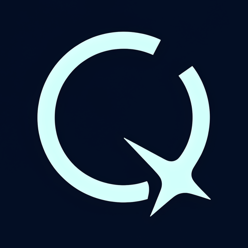

A small question.
A simpler next step.
Ask questions, draft a message, make a plan or set a reminder. Local reasoning uses your configured model; sleeping/offline hosts have reminder limitations.

QuasnoozeBY QUASYNVO View on GitHub ↗A LITTLE COSMIC. A LOT MORE PERSONAL.
Meet Quasnooze. Your local-first assistant for everyday questions, tangled ideas and getting things done—with you in control.
A calm personality. Not an artificial delay. Open the scripted preview ↗ — no install, no model, no microphone.

A quiet presence. No microphone is active on this website.
SILENT SYNTHETIC PREVIEW · NO LIVE AI, AUDIO OR TOOLSNot another assistant
that hides what it’s doing.
YOUR DAY, A LITTLE LESS TANGLED
Start with what exists. Understand what needs permission. See what still needs testing.
Ask questions, draft a message, make a plan or set a reminder. Local reasoning uses your configured model; sleeping/offline hosts have reminder limitations.
Native tray/widget, a talk hotkey and opt-in local voice. The microphone starts muted. Real hardware acceptance remains pending.
Time, system status, bounded file lookup and allowlisted app launches. Supported simple resident actions can skip model inference.
NO MYSTERY BETWEEN ASK AND ACTION
An animation never grants permission. A failed tool call never becomes a success story.
Use the Windows voice host, web or a configured messaging channel.
A supported local action—or the configured model when reasoning is needed.
Policy checks and required approvals come before sensitive actions.
Results, sources, failures and uncertainty—not invented progress.
YOUR WORLD IS NOT A BACKGROUND PROCESS
Microphone off until you opt in. Native Windows voice stays with the Windows host. Optional browser speech can involve its vendor; this static website never captures audio.
Personal state stays with your install. Local storage is not automatically encrypted. Optional cloud providers, network tools and messaging channels have their own data boundaries.
Tools have real power. Approvals and workspace policies help, but plugins run with process privileges. Quasnooze is not an OS sandbox or unrestricted desktop-control agent.
A NEW ORBIT STARTS HERE
Node.js 22+. Ollama for real local reasoning. Windows 10/11 for the native Windows host. Use the Git checkout until an npm release is published and verified.
Open the complete setup guide ↗git clone https://github.com/Quasynvo/Quasnooze.git
cd Quasnooze
npm run demo # look first: canned brain, no model, no keys
npm run setup
npm run doctor
npm run brain
npm run desktop
On Linux/macOS, or for web/channels without a native Windows host, use
npm start instead of npm run desktop.
A FEW THINGS, CLEARLY
No. This is the static project website. You run Quasnooze on your machine. Neither the motion controls nor the preview states call a model, microphone or tool here.
Not on this website. These are silent, synthetic Canvas 2D previews. The self-hosted engine can analyze opt-in microphone input locally; native speech needs the Windows host. No preview grants permission.
Same project, new identity: Quasnooze by Quasynvo. Old CLI/configuration aliases and saved data remain supported. Historical research retains the old name. Read the migration guide.
Yes. Pick an evidence-backed open contributor task, coordinate ownership, add tests and submit a small PR. Independent review and human merges remain required. Find a task.
Physical Windows microphone/wake-word/startup and accessibility behavior still need acceptance testing. No cross-product speed/security superiority, trademark clearance or npm availability is claimed.